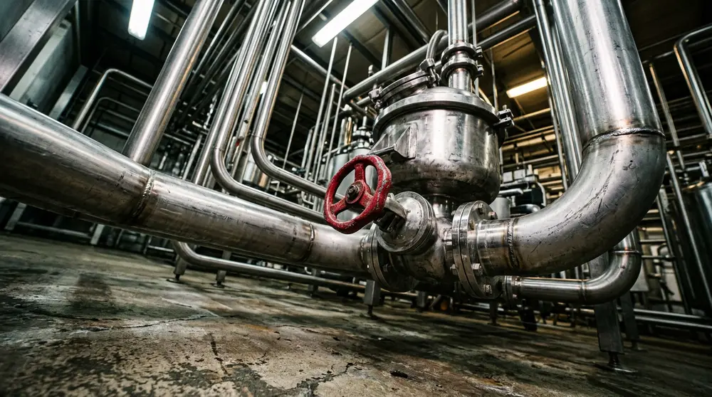
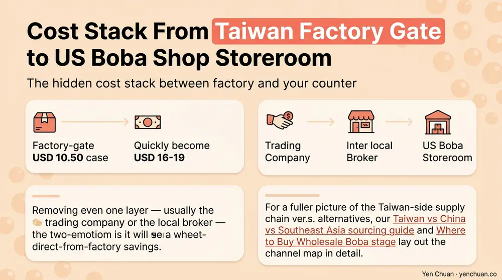
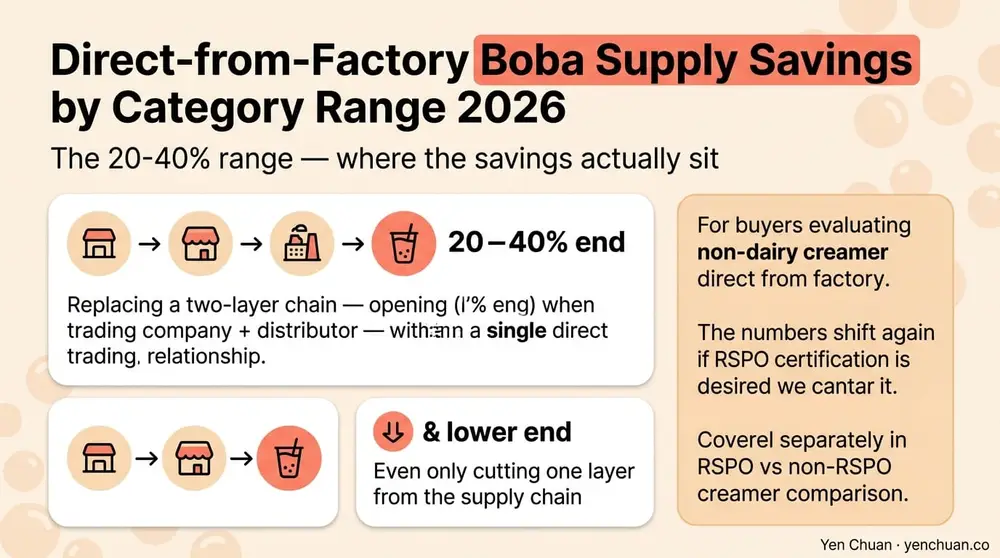

Articles / Business & sourcing
Direct-from-Factory Boba Supply Saves 20-40%
2026-06-04 · Sourcing, Business

Most boba operators buying wholesale in 2026 are paying three margins stacked on top of the factory gate price: one to a distributor, one to a broker or trading company, and often one more to a regional importer. Strip those layers out and the landed cost falls by 20 to 40 percent — not as a promise, but as the arithmetic of how margins compound through a supply chain. This piece breaks down where the money actually goes between a Taiwanese factory and your storeroom, which intermediaries are worth keeping, and the practical steps to move from a distributor-sourced program to a direct-from-factory one without breaking your operations.
The hidden cost stack between factory and your counter
A case of 2 kg brown sugar tapioca pearls leaving a Taichung factory at NTD 340 (roughly USD 10.50 at April 2026 rates) often reaches a US boba chain's storeroom at USD 16 to 19 per case. The delta is not freight alone. Freight from Kaohsiung to Los Angeles on a full container runs about USD 0.40-0.60 per kg for dry goods. Duty, broker fees, and domestic trucking add another USD 0.80-1.20. That accounts for maybe USD 2.50-3.00 of the gap. The remaining USD 3.00-5.50 is layered margin.
Each intermediary in a typical boba import chain takes a cut:
| Layer | Function | Typical markup on factory cost |
|---|---|---|
| Taiwan trading company | Sources from multiple factories, handles export paperwork | 8-15% |
| Overseas importer | Holds inventory, manages customs, warehouses stock | 15-25% |
| Regional distributor | Delivers to foodservice accounts, offers credit terms | 20-35% |
| Local broker or rep | Introduces accounts, takes commission | 3-8% |
Stack two or three of these and your factory-gate USD 10.50 case becomes USD 16-19 very quickly. Removing even one layer — usually the trading company or the local broker — is where direct-from-factory savings begin. For a fuller picture of the Taiwan-side supply chain versus alternatives, our Taiwan vs China vs Southeast Asia sourcing guide and Where to Buy Wholesale Boba lay out the channel map in detail.

What "direct from factory" actually means
The phrase is used loosely in the industry. A clean working definition: direct-from-factory means you hold the purchase order, commercial invoice, and bill of lading with a named manufacturer whose production lines you can identify, audit, and visit. Your goods clear customs under that manufacturer's export license, not a trading company's.
This matters because several business models call themselves "direct" without meeting that standard. A Taiwan-based trading company may own a warehouse and ship containers under its own name, but it does not run the production line. A US importer may carry a single Taiwanese brand, but they are still holding the margin of a regional distributor. True factory direct removes the trading layer and, depending on volume, can also remove the regional distributor. For the Yen Chuan catalog, see the tapioca pearls wholesale range and Taiwan black tea as examples of SKUs we ship direct under our own export license.
The 20-40% range — where the savings actually sit
Savings vary by product category and current volume. Based on pricing we see across our own direct-export programs in 2026:
- Tapioca pearls (dry, stock SKUs): 22-30% savings by going direct from factory versus buying from a regional distributor. Pearls are dense, uniform, and ship well, so intermediary risk is low — and the margin distributors take reflects mostly inventory holding, not value-add.
- Flavored powders: 28-38% savings. Powders carry higher distributor margins because of slower turnover, smaller case sizes, and the educational work distributors do on menu placement.
- Fruit syrups and purees: 18-25% savings. Liquid goods are heavier, so freight is a bigger share of total cost and the direct gap is smaller. Still meaningful on volume.
- Packaging (cups, lids, straws): 15-22% savings. Domestic inventory holding matters here for just-in-time reorders, so direct buying needs strong demand forecasting.
- Non-dairy creamer: 25-35% savings. The category sits between powders and pearls — high margin but also high technical requirement for storage.
The higher end of each range (closer to 40%) applies when you are replacing a two-layer chain — trading company plus distributor — with a single direct relationship. The lower end applies when you are only cutting one layer. For buyers evaluating non-dairy creamer direct from factory, the numbers shift again if you want RSPO certification, which we cover separately in the RSPO vs non-RSPO creamer comparison.

What you give up — and whether it matters
Direct sourcing is not free. Distributors exist because they solve real problems, and moving past them means absorbing those functions yourself. The four things you take on:
Inventory holding. Distributors carry 30-60 days of safety stock at their regional warehouses. Direct buyers need either their own warehouse capacity, a 3PL contract, or enough SKU rotation to go container-direct every 8-12 weeks. A 30-location café chain usually has the volume; a 3-store operator rarely does.
Credit terms. Distributors routinely offer net 30 or net 45. Factories typically require 30-50% deposit at PO and balance at bill of lading. That is a working capital difference of roughly one full shipment cycle — often USD 40,000-120,000 tied up for a mid-size operator.
Customs and compliance. Your name goes on the FDA FSVP (if you are in the US), the EU food business operator registry, or the equivalent for your market. That is administrative overhead but usually a one-time setup plus quarterly review.
Demand forecasting. A distributor absorbs your forecasting errors by pooling them with other accounts. Going direct means your SKU-level demand planning has to be tight enough that a 3-month lead time doesn't strand you. The milk tea supplier guide covers how to vet factory lead times and negotiate priority slots.
If you are running three or fewer locations with inconsistent inventory space, direct is often not worth the trade. From roughly location five upward — especially if you carry consistent SKUs across outlets — the math starts to favor direct on your top 5 to 10 items.
The practical transition path
Moving from distributor to direct is usually best done in three phases rather than all at once.
Start with a hybrid top-SKU program. Identify your three to five highest-volume ingredients — almost always tapioca pearls, one or two core powders, and black tea leaves. Move just these direct from factory, keeping your distributor relationship intact for tail SKUs and emergency fills. This proves your team can handle customs and warehousing without risking your full menu. The bubble tea startup costs breakdown includes a worked sample that shows how concentrated the top-5 SKU spend is for a typical shop.
Next, expand to category direct. Once top SKUs are stable, move whole categories — say, all powders or all syrups — direct from one or two factories. This simplifies vendor management and usually unlocks a second round of volume pricing.
Finally, negotiate annual framework contracts. After 12 months of direct ordering, you have demand data, quality records, and delivery performance. This is where you lock in annual pricing, priority production slots, and custom formulation access. By this point distributors are either consolidated to niche tail items or removed entirely.
Who this does not work for
Direct-from-factory sourcing is a volume play. Below roughly USD 250,000 in annual Taiwan-ingredient spend, the container math and working capital commitment rarely clear the distributor's markup. Small independents are usually better served by buying from a domestic distributor carrying direct-imported Taiwanese brands, where the margin is smaller than the two-layer stack because the distributor itself is already buying direct. Single-shop operators planning a menu for the first time can start with Yen Chuan's menu design and R&D solution rather than chasing container-level pricing from day one.
Authority citations
- Statista — Global Bubble Tea Market 2026 Outlook
- USDA FAS — Taiwan Agricultural Trade Report 2025
- McKinsey & Company — Foodservice Supply Chain Disintermediation Study, 2025
- World Bank — Logistics Performance Index, East Asia 2026
- Food & Beverage Magazine — Boba Channel Pricing Survey 2026
About Yen Chuan
Yen Chuan has been at the heart of Taiwan's bubble tea industry for over 20 years, supplying premium powders, syrups, tapioca pearls, and tea leaves to thousands of boba shops worldwide. With an in-house R&D lab and a commitment to quality ingredients, Yen Chuan is more than a supplier — we're your partner in the boba business.
We run our own factory, hold our own export license, and ship direct to buyers in over 40 countries. The savings numbers in this guide come from the programs we actively run with café chains and regional distributors today.
Ready to run the numbers?
If you are evaluating whether a direct-from-factory program works for your operation, we can help you model the savings against your current cost stack. Contact our export team with your top SKUs and current landed costs, and we will run a side-by-side comparison. You can also browse our full catalog to see factory-direct pricing on stock items.
Frequently Asked Questions
Q: How much can I really save buying boba direct from a Taiwan factory? A: Realistic savings range from 20 to 40 percent on landed cost, depending on product category and how many middle layers you remove. Tapioca pearls and non-dairy creamer tend to sit at 25-35 percent. Savings cluster at the higher end when you replace a two-layer chain with one direct relationship.
Q: What does "direct from factory" actually mean? A: A clean definition: you hold the PO and BOL with a named manufacturer whose production line you can identify and audit, and your goods clear customs under that manufacturer's export license. Trading companies shipping under their own name do not count as factory direct, even if they call themselves that.
Q: What do I give up by skipping distributors? A: Four things: inventory holding (30-60 days of safety stock), credit terms (distributors offer net 30-45, factories want deposits), customs and compliance paperwork, and demand forecasting support. Each is manageable at the right volume, but all four together add real operational work.
Q: At what shop count does direct-from-factory make sense? A: Typically five locations or more with consistent SKU overlap, or roughly USD 250,000+ annual Taiwan-ingredient spend. Below that, the working capital and container math rarely clear the distributor margin you would be replacing.
Q: How do I transition from distributors to direct without breaking operations? A: Phase it. Move three to five top-volume SKUs direct first while keeping the distributor for tail items. Once stable, expand to whole categories. After 12 months of direct ordering, negotiate annual framework contracts with priority production slots.